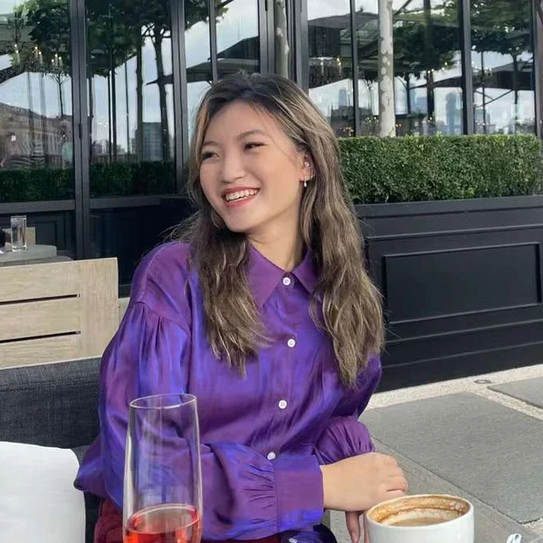

Today's special
3D Gamification of a Site Walk
A gamified walkthrough where learners explore a food site, spot the risks and practice the right call, designed and built with AI.

Meet Fern
Fern is a Learning Design Manager who designs eLearning, instructor-led and blended programs that people enjoy and remember. She loves turning complex topics into clear, engaging experiences.
Outside work she likes to cook, take road trips and keep Fernnie well fed.